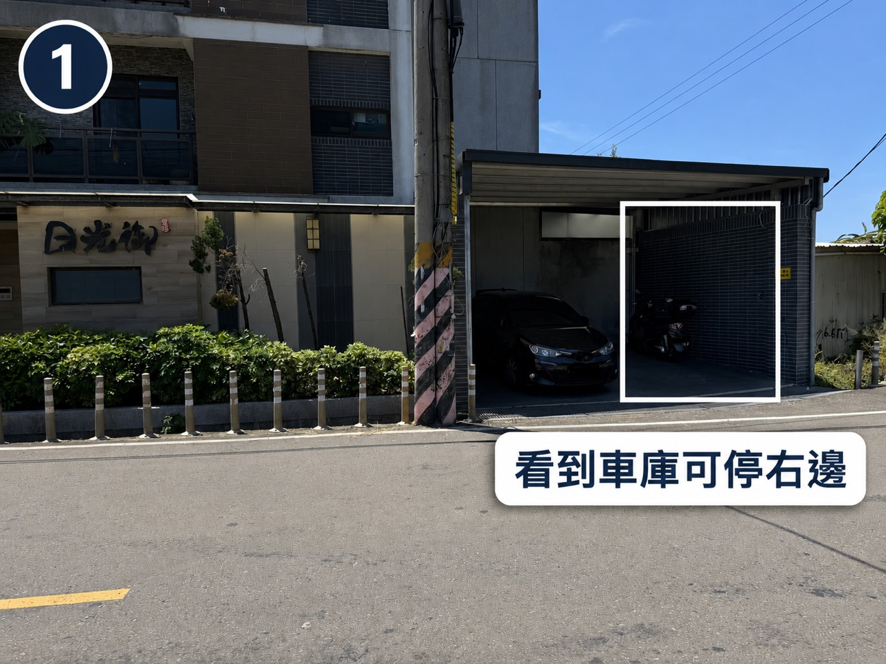
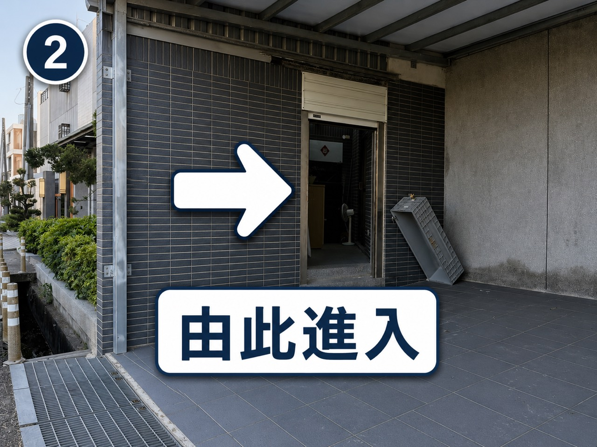
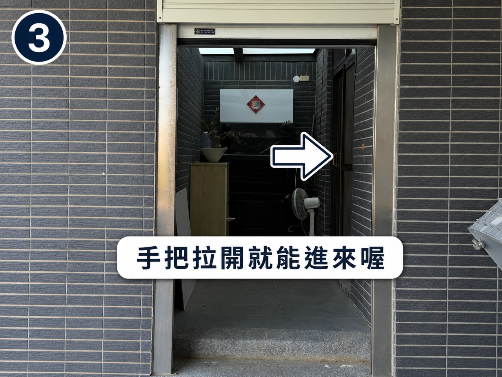

Visit Guide
自取前請先透過 LINE 確認時間與品項。抵達附近後，可依下方照片順序停車、進入，若現場狀況不同再私訊確認。

抵達後先看建物外觀與車庫位置，右側框選區域可臨停。停妥後再準備由旁邊入口進入。

停車後往車庫旁的入口走，依照片箭頭方向進入。若當天有其他車輛或物品，保持出入口通暢即可。

走到入口後，拉開右側門把即可進來。若門口暫時沒人回應，請先用 LINE 告知已抵達。